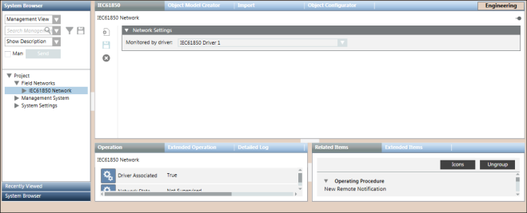

IEC61850 Network Workspace
The IEC61850 Network workspace allows you to configure the network settings such as associating the IEC61850 driver to the network, saving the association, and deleting the network. The properties associated with the selected network display in the Operation or Extended Operation tab. You can also change the value of the poll interval. By default, this value is set to 0 ms.

IEC61850 Toolbar | ||
Icon | Name | Description |
| New IEC61850 Connection | Creates a new Device Connection. |
| Save data | Saves any changes. |
| Delete object | Deletes the IEC61850 network. |


Network Settings Expander
The Network Settings expander allows you to define the IEC61850 Driver monitoring for a IEC61850 network.
Network Settings | |
Item | Description |
Monitored by driver | Allows you to select an IEC61850 driver. |